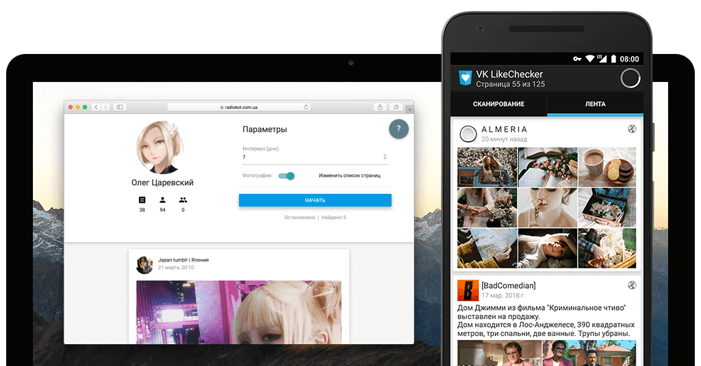

Олег Корецкий
Олег Корецкий
VK LikeChecker
Хочется знать, что лайкает девушка или друг? Android приложение VK LikeChecker поможет в этом. Приложение находит записи, которые лайкал пользователь за указанное время, и составляет из них ленту. Все, что нужно – ID страницы и немного терпения.
В поиск входят:
- Стены подписок пользователя
- Стены его друзей
- Фотографии друзей (только для авторизованных пользователей)
- Стены групп, если их список не скрыт
Также можно добавить в поиск собственные страницы.
Куда пропала версия для Windows? Из-за присутствовавшего в ней ранее механизма самообновления большинство антивирусов стали определять VK LikeChecker для Windows как вредоносную программу. Чтобы не портить репутацию сайта было принято решение отказаться от этой версии.
Куда пропала веб-версия? Мне неохота переделывать ее под новые ограничения VK.
